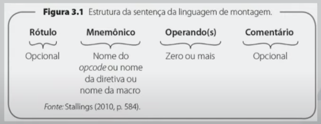
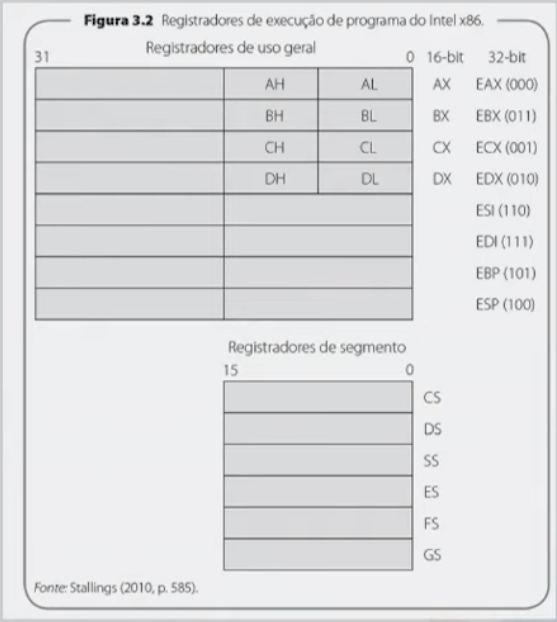
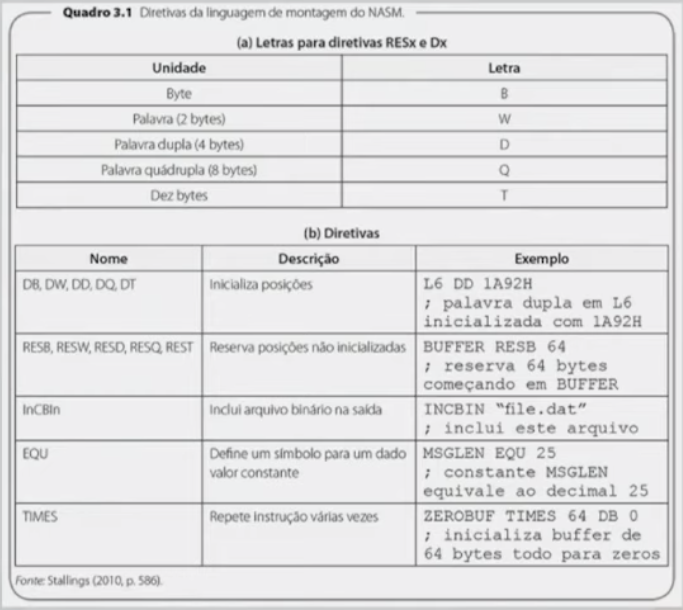
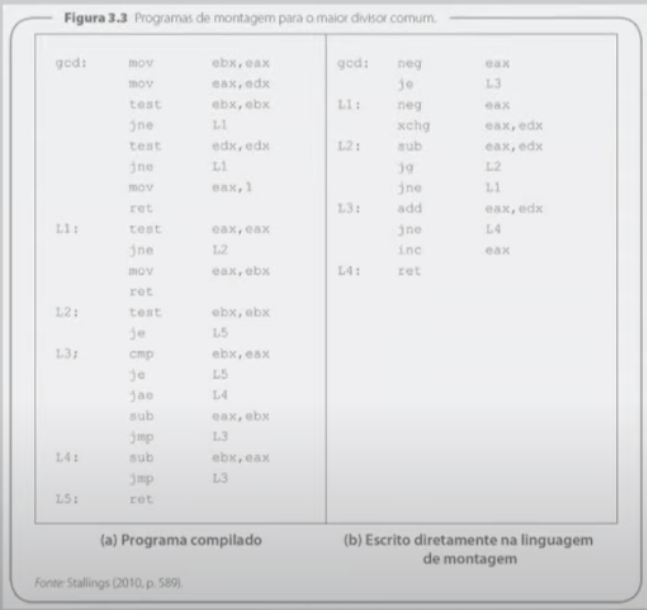

Disciplinas
-
SISTEMAS COMPUTACIONAIS. Concluído
Materiais
Vídeo 2 - Sistemas Computacionais - Linguagens de Montagem. sendProf° ministrante: Alessandra Alaniz Macedo.
Conteúdo
Linguagens de Montagem.
ELEMENTOS:.
- A estrutura de sentença da linguagem de montagem é composta por quatro elementos
- Rótulo
- Mnemônico
- Operando(s)
- Comentário
LINGUAGEM DE MONTAGEM.
RÓTULO.
- É identificador da instrução ou de uma constante
- Rótulos são usados com mais frequência em instruções de desvio. Exemplos:
- L2: SUB EAX, EDX
- JG L2
- No exemplo, o programa continua no laço de volta para a posição L2 até que o resultado seja zero ou negativo
- quando a instrução JG é executada e o resultado é positivo, o processador coloca o endereço equivalente ao rótulo L2 no contador de programa
POR QUE USAR RÓTULOS?.
- Um rótulo possibilita que uma posição do programa seja mais fácil de ser localizada e lembrada
- O rótulo pode ser movido com facilidade para corrigir um programa
- O montador automaticamente mudará o endereço em todas as instruções que usam o rótulo quando o programa for remontado
- O programador não precisa calcular endereços de memória relativos ou absolutos, apenas os usa conforme a necessidade
MNEMÔNICO.
- É o nome da operação ou função da sentença da linguagem de montagem
- Serve para identificar uma operação ou função
- pode corresponder a uma instrução de máquina (associado a determinado opcode), uma diretiva do montador ou uma macro
POR QUE USAR A LINGUAGEM DE MONTAGEM?
- Programar na linguagem de montagem demora mais do que em uma linguagem de alto nível, pois:
- Leva mais tempo para depurar, além da manutenção mais complicada devido ao desempenho e acesso à máquina
- É mais fácil que a linguagem de máquina, porém, ainda assim, tem suas dificuldades
OPERANDO(S).
- Servem para especificar dados necessários à operação
- Uma sentença da linguagem de montagem inclui zero ou mais operandos
- Cada operando identifica um tipo de referência: um valor imediato, um registrador ou uma posição de memória
- A linguagem de montagem fornece convenções para:
- Distinguir os três tipos de referências de operandos
- Indicar o modo de endereçamento
Exemplos:
COMENTÁRIO.
- Começa com um caractere especial sinalizando para o montador que o restante da linha é um comentário e, por isso, deve ser ignorado pelo montador
- Todas as linguagens de montagem permitem a inserção de comentários dentro do programa
- O comentário pode estar do lado direito de um comando em linguagem ou ocupar uma linha inteira de texto
TIPOS DE SENTENÇAS.
- A Sentença-comentário consiste inteiramente de um comentário
- Instrução é o tipo de sentença de representações simbólicas de instruções de linguagem de máquina
- As sentenças diretivas (pseudoinstruções) fazem parte da linguagem de montagem que não são diretamente traduzidas para instruções da linguagem de máquina e, portanto, não são executáveis
DIRETIVAS.
- São instruções para o montador executar ações específicas durante o processo de montagem, como:
- Definir constantes
- Designar áreas da memória para armazenar dados
- Inicializar áreas da memória
- Inserir tabelas ou outros dados fixos na memória
- Permitir referências a outros programas
Exemplo:
MACRO OU SUB-ROTINA.
- É uma seção do programa que pode ser usada diversas vezes, sendo chamada a partir de qualquer ponto do programa
- Sub-rotinas – são tratadas pelo hardware - em tempo de execução
- Macros - são consideradas pelo montador em tempo de montagem
EXEMPLO DE MACRO:
Macro de uma linha
%DEFINE B(X) = 2*X
%DEFINE A(X) = 1+B(X)
Em algum ponto do programa da linguagem de montagem aparece a seguinte sentença
MOV AX, A(8)
O montador expande essa sentença para
MOV AX, 1+2*8
PROGRAМА С.
// gcd(a,b) = max[k, tal que k é divisor de a ek divisor de b] unsigned int gcd (unsigned int a, unsigned int b) {
if (a == 0 && b == 0)
b = 1;
else if (b == 0)
b = a;
else if (a != 0)
while (a != b)
if (a '<'b) b = a;
else
a -= b;
return b;
